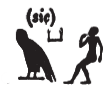
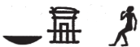
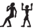
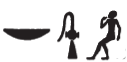
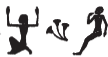
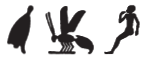
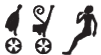
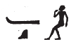
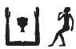
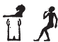

Column 12 (315-327)
Esna 315
- Location: Column 12
- Date: Trajan
- Hieroglyphic Text
- Bibliography: el-Sayed 1982, II, p. 661, Doc. 1090 (A only, partial translation). See also Tempeltexte 2.0
Answ.t-bỉty
tmȝ.t wr.t
zḫn(.t) m ỉt(?)
štȝ.t
ḫpr(.t) ḫnt
ỉt-ỉt.w mw.t-mw.wt
[…]
A King of Upper and Lower Egypt,
the great Mother,
who unites with the father(?).312
The mysterious serpent,
who came about before,
father of fathers, mother of mothers
[…]
Bnsw.t-bỉty
nb sḫ.t m ḥwnw rnp
nḏ.n=f z nb
nty m nỉw.t=f
ḥr sḫr.w=sn
nḥm.n=f nỉwty.w
ẖnmw
dỉ ṯȝw n ʿnḫ
B The King of Upper and Lower Egypt,
Lord of the Field as a rejuvenated youth.
As he protected every man
who is in his city
because of their condition,
so he rescued313 the citizens.
Khnum,
who gives the breath of life.
Esna 316
- Location: Column 12
- Date: Trajan
- Hieroglyphic Text
- Bibliography: None.
Cartouches of Heka and Trajan before Khnum-Re Lord of Esna and Khnum-Re Lord of the Field. Standard spellings.
Esna 317
- Location: Column 12
- Date: Trajan
- Hieroglyphic Text
- Bibliography: Sauneron 1962, pp. 281-287; see also Tempeltexte 2.0
1dwȝ nṯr.t tn
m ḏsr wr
ḏd-mdw
nṯr.w rmṯ.w
mỉ=n ȝ
ks snỉ-tȝ
ḫr mw.t-nṯr
N.t pw
n.t
nnw=s pw Nwn
pr nty nb.w
m pʿpʿ.n=s
nỉ wn ḫp(r)
m ḫm ỉr.n=s
qrḥ.t pw
wnn(.t) m šȝʿ
mkr.t ms.tw 2ḏs=s
tmȝ.t ḥr.t-tp
nty ỉmn-rn=f
nṯr nṯr.t
nṯr ỉr nṯr (nb) m-bȝḥ
ṯnỉ ṯnỉ r (nṯr.w?)
wr.t wr.tw r nṯr.yt
tp.t pw
ḫp(r.t) m ḥȝ.t ỉry
šȝʿ(.t) ḫp(r)
nn ḫp(r) ḫprw
ḫp(r) wnn.w nb
m-ḫt ḫp(r)=s
1 Praising this goddess
in great sanctity.
Words spoken:
O gods and people,
come now!
Bend down and kiss the earth
before the Mother of God,
for she is Neith (N.t),
the n.t-waters,
whose child (nnw) is Nun (Nwn).
All that is came forth
from what she birthed.
There is nothing which came about
unaware of what she accomplished.
She is the qrḥ.t-serpent,
who existed in the beginning;
the mkr.t-serpent, who birthed 2 herself;314
the mother uraeus
of Hidden-of-name (Amun).
Both god and goddess,
the god who made (every) god before;315
distinguished, most distinguished of (gods?),
great one, greatest of goddesses.
She is the uraeus,
who came about before them all.
She who began existence,
when no beings existed,
all that exists came into being
after she came into existence.
nts ỉsk ỉn(.t) pḥwy
n nn r-ȝw
3m ḏ.t=s nt mtr
m rn=s n ḏ.t
ʿȝ zp-snw sḫr.w m ḥn.ty
n.t nfr.t n kȝ=s
ỉʿrr.t ḫt.tw
m ty.t=s
nts Mw.t Rʿ
wbn šww ỉm=s rʿ-nb
m ỉrw=s pfy n Nw.t
dỉ(.t) ỉḫt nb
r-ḏr ỉb=s
qmȝ(.t) tȝ r-ʿ=s
grg tȝ.wy ẖr s.t-ḥr=[s]
wr.wy ḥkȝw=s
4ḥry-tp n pḏ.wt 9.t
ḫȝs.wt nb.w ḫȝb(.w)
n bȝw=s
nts pw rdỉ(.t) qn nḫt
nswy.t ʿȝ.t
n zȝ-Rʿ
nsw.t-bỉty
(pr-ʿȝ)|
It is she who spans to the very end
of all this,
3 in her true body (ḏ.t),
in her name of linear eternity (ḏ.t).
How great of plans for all time!
The red and white crowns are for her Ka,
the uraeus is inscribed
with her hieroglyph.316
She is the Mother of Re,
from whom the sun rises, daily,
in this her visible form of Nut,
who gives all things,
according to her heart,
who creates the earth at her control,
who founds the lands under her command.
How great is her magical power
4 over the Nine Bows,
all foreign lands are bent down
to her power;
it is she who gives victory and power,
and a great kingship,
to the Son of Re,
King of Upper and Lower Egypt,
(Pharaoh)|
zȝ.w-n=sn
zȝ=tn r=s
bw nb.w
ḥr=tn r bȝw=s
ṯȝy.w ḥmw.wt
dwȝ ḥm=s
šms=s r psḏ.t
snḏ n=s
sdȝdȝ n šfy(.t)=s
5(mw.t?) Rʿ pw
ʿȝ bȝw
nb(.t) nš(n)
ỉṯ=s n=f nḏ.t
ʿn=s
r ḥtp n=s
nb.t pḏ.t
ḥnw.t šsr
tqr pḥty
ỉr.t ḫrwy.t
m ẖȝk.w=ỉb.w
nbw.t wr.t
ʿȝ nbỉ.t
wd(.t) hh=s
r ḫfty=s nb
wbd(.t) sbỉ
m ỉr.t Sḫm.t
O Guardian deities:
be on guard for her!
All people:
avoid her power!
Men and women:
praise her Majesty,
worship her more than the Ennead!
Be fearful of her,
and tremble for her prestige.
5 She is (the Mother of?) Re,
great of power,
lady of rage;
she begins vengeance on his behalf,
and she is pleasant (or: she returns)
to whomever is peaceful for her.
Lady of the bow,
Mistress of the arrow,
fierce of strength,
who makes a slaughter
among the disaffected ones.
Great golden one,
great of flame,
who casts her flame
against all her enemies,
who burns up the rebel
with the fire of Sakhmet.
nfr.wy šms=s
6ʿn.wy dwȝ=s
t(w)r.wy rhn n rn=s
ḥnw.t pw snb
ʿnḫ r-ḫt=s
nts wr(.t) wsr.t
ḥr(.t) kȝ.w
ṯnỉ(.t) pw
nb(.t) ṯnỉ.w
Rnnwt.t Wȝd.t
nb(.t) nfr(.w)
nṯr.t nb(.t) ndb
nb.t mrḥ.t m-ʿb mnḫ.t
fdq(.t) r-mr(=s)
n 4 ỉp.w
ỉmy.w p.t tȝ
sḫȝ bȝw=s
nn wrḏ (n) šms=s
dwȝ n qȝw
kȝ(=s) (r)-ḥn.ty
How good it is to serve her!
6 How pleasant to worship her!
How laudable to bend to her name!
She is the Mistress of health,
life is under her control.
She is the great and mighty one,
Chief of Foods.
She is the distinguished one,
Lady of the distinguished.
Renenutet-Wadjyt (or: Green Renenutet),
Lady of good products;
Goddess, Lady of sustenance.
Lady of ointment and linen,
she rewards (thereof) as (she) desires,
to the four beings
who are in heaven and earth.317
Recall her power(?);318
never tire of serving her;
worship to the heights
her Ka, for the limits of eternity.
Esna 318
- Location: Column 12
- Date: Trajan
- Hieroglyphic Text
- Bibliography: Sauneron 1962, pp. 87-88; see also Tempeltexte 2.0
NB: This hymn apparently continues the awakening hymn Esna 379.
§37(rs=k nfr)
ẖnmw-Rʿ nb tȝ-sn.t
bȝ n bȝ.w
n nṯr.w m ḫm.w
7 (Awake beautifully),
Khnum-Re Lord of Esna,
Ba of Bas
of the gods in the shrines.
rs=k nfr
Rʿ m ỉtn wr
ḥȝỉ ḫprw
ẖnmw-Rʿ nb tȝ-sn.t
bȝ ḥry nṯr.w
ṯnỉ ḫpr.w
Awake beautifully,
Re as the great sun disk,319
radiant of manifestation.
Khnum-Re Lord of Esna,320
Ba, chief of the gods,
distinguished of forms.
rs=k nfr
nbỉ ḥḥ.w
rȝ-ḥzȝ (ḥr) ỉȝ.wt
drp psḏ.t m ỉḫt=f
ẖnmw-Rʿ nb tȝ-sn.t
bȝ ʿȝ m kȝr=f
zmȝ ỉḫt nn ȝb
8{kȝr=f zmȝ ỉḫt}
Awake beautifully,
Lord of building,
chief of the potter’s wheel,
who seeks out the mounds,321
and feeds the Ennead with his products.
Khnum-Re Lord of Esna,322
great Ba in his shrine,
who assembles food, without fail.
8 {his shrine, who assembles food}
rs=k nfr
nḥḥ m ỉrw=f
wḥm msḫʿ.w
mỉ rʿ-nb
ẖnmw-(Rʿ) nb tȝ-sn.t
bȝ ʿnḫ
ỉwty sk
Awake beautifully,
eternity in his visible form,
who repeats births
just like every day.
Khnum-(Re) Lord of Esna,
living Ba,
who never perishes.
rs=k nfr
Ḥr m pȝ hrw
psḏ m šnb.t
m dbn(?) n psḏ.t=f
ẖnmw-Rʿ nb tȝ-sn.t
bȝ m ỉtr.ty
sḫm-ḏsr=sn
Awake beautifully,
Horus(?) during the day,
who shines as a falcon,
surrounded(?) by his Ennead.323
Khnum-Re Lord of Esna.
Ba in the dual chapels,
their sacred power.
rs=k nfr
wbny nṯr.w
wbd ẖȝk.w-ỉb.w
9{wbd ẖȝk.w-ỉb.w}
m nsr.t=f
ẖnmw-Rʿ nb tȝ-sn.t
Ỉtm ʿȝ nbỉ.t
Awake beautifully,
shining one of the gods,
who burns the disaffected ones
9 {who burns the disaffected ones}
with his fiery tongue.
Khnum-Re Lord of Esna,
Atum,324 Lord of the flame.
rs=k nfr
bȝ m Mȝnw
srs.n=f nty.w-ỉm šps.w
ẖnmw-Rʿ nb tȝ-sn.t
Ỉtm m ḏ.t=f
nb tmm.w
Awake beautifully,
Ba in Manu,
having awoken the noble deceased ones.
Khnum-Re Lord of Esna,
Atum in his body,
Lord of the existing.
rs=k nfr
ḥtp.tw m ʿnḫ.t
ỉmnty.w m ỉȝw
n st.wt=f
ẖnmw-Rʿ nb tȝ-sn.t
10Wsỉr m ḏ.t=f ḏ.t
Awake beautifully,
having set in the necropolis,
the Westerners are in praise
for your solar rays.
Khnum-Re Lord of Esna,
10 Osiris in his body, forever.
rs=k nfr
bȝ m ỉȝbt.t
šhb ty.t=f ḏsr
ẖnmw-Rʿ nb tȝ-sn.t
dỉ ṯȝw
n srq-ḥty.t
Awake beautifully,
Ba in the East,
Sheheb is his sacred image.325
Khnum-Re Lord of Esna,
who gives air
to let throats breathe.326
rs=k nfr
sʿnḫ ṯȝw
ṯz mw m-ẖnw qs.w
ẖnmw-Rʿ nb tȝ-sn.t
dỉ ṯȝw m-ẖnw swḥ.wt
Awake beautifully,
he who enlivens the chick,
and binds semen in bones.
Khnum-Re Lord of Esna,
who gives air within eggs.
rs=k nfr
ỉrw=k qdỉ nṯr.w
nw pȝwty
nḥp rmṯ.w
rs=k mỉ-qd
ẖnmw-Rʿ nb tȝ-sn.t
11tȝ-ṯnn wtṯ m šȝʿ
psḏ=k
ḥʿʿ=n n mȝȝ=k
dỉ=k Ỉwny.t m Šw-rḫ-dd-ṯȝw
nn nṯr
ỉr ỉr.n=k
Awake beautifully,
your form builds the gods
of the Primeval one,
and fashions humans.
May you awake entirely!
Khnum-Re, Lord of Esna,
11 Tatenen, who begat in the beginning.
When you shine,
we rejoice to see you,
you place Iunyt in ecstasy!
There is no god
who can do what you have done.
rs=k nfr
pȝ qd wr
ẖnmw-Rʿ nb tȝ-sn.t
pȝ ḥmww n ʿnḫ
ʿȝ mnw
grg.n tȝ
ẖr ʿ=f
mȝȝ r pȝ wḫȝ
nty mḥy.t ḫft-ḥr
(n) wbȝ
Awake beautifully,
great builder,
Khnum-Re Lord of Esna.
The artisan of life,
great of monuments,327
populating the earth
is under his control.
(Look to the column
to the north of the pronaos,
immediately across).
This hymn continues in Esna 249.
Esna 319
- Location: Column 12
- Date: Trajan
- Hieroglyphic Text
- Bibliography: Sauneron 1962, pp. 233-242 (partial); see also Tempeltexte 2.0
12ỉr ḏsr sštȝ
m ḥb ʿḫỉ p.t
sʿq psḏ.t
nt nb nḥp
r s.t=sn
sr nṯr
ḏsr wȝ.t
ỉn ẖry-ḥb ḥry-tp
sḫʿỉ nṯr ʿȝ pn
ỉr(.t) n=f ỉr.w nb n ẖn.t
mỉ nty r-ḥȝ.t
swʿb ḫft wḏȝ=f r pr=f
ḥtp ḥr s.t=f wr.t
m ʿnḏ wḏȝ
smn nḥp
13sḏfȝ ḫȝ.wt
sqr wdn.wt
n kȝ=f
ỉr(.t) ỉhȝy
m hȝw nỉw.t=f
r qȝ nt p.t
sṯỉ bs
ḏr zmȝw r ḥḏ-tȝ
12 As for sanctifying the mystery,
in the festival of Lifting up the Sky,
cause the Ennead
of the Lord of the Potter’s Wheel
to enter to their places.
Announce the god
and sanctify the path
by the Chief Lector Priest.
Carry this great god in procession,
and perform all navigation rites for him
as outlined above.
Purification when he goes to his temple,
and sits upon his great throne,
completely safe and sound.
Install the potter’s wheel,
13 provision the altars,
sacrifice offerings
for his Ka;
perform ỉhȝy-cries
all around his city
to the height of the sky.
Light torch(es),
from darkness until dawn.
ỉr(.t) ỉȝw zp-snw
n nṯr ʿȝ pn
štȝ šps
sḥtp kȝ=f
m sȝḫ.w nb.w nfr.w
ḏd-mdw
ỉȝw zp-snw m ḥr=k nfr
ẖnmw nb=n r-ḏr=w
nṯr šps
qmȝ 14ỉrw=f nb.w
m tp-ḥsb
pr=ỉ m ḥr=k
ḥr dwȝ=k rʿ-nb
ỉr=ỉ n=k ỉȝw
m-ḥȝ.t nṯr.w
sḥtp=[ỉ] tw
m pḥwy psḏ.t
m.k twt nṯr nṯry
grg tȝ m kȝ.t=f
nb=ỉ ỉm=k
ḥm=k ỉm=ỉ
Making wonderful praise
for this great god,
august and mysterious.
Satisfying his Ka
with all good transfiguration hymns.
Words spoken:
Praise, praise in your good face,
Khnum, our lord entirely!
August god,
who created 14 all his forms
perfectly.
I come forth before you,
worshipping you, daily.
I make praise for you
as first of the gods;
[I] pacify you
as the last of the Ennead.
Behold, you are the divine god,
who populates the earth with his work.
You are my lord,
and I am your servant.
wr šfy.t=ỉ
m rn=k nb
ḫpr sḫr.w=ỉ
m wḏ kȝ=k
ʿnḫ ỉwf=ỉ
m nfw n rȝ=k
snb qsw=ỉ
15m mḥy.t n fnḏ=k
šzp nṯry=ỉ ȝw.t-ỉb
n mȝȝ=k
hrw nfr hrw n mȝȝ=k
nfr.wy dwȝ=k rʿ-nb
ḥb=ỉ tw m ḥb=k
ḥʿʿ=ỉ tw m ẖn.t=k
ḥtp ḥry-mk.t=ỉ
ḏr ḥtp=k m pr=k
ỉb=ỉ r mȝȝ=k zp-snw
pȝ wr n pr-wr
ỉb=ỉ r mȝȝ=k zp-snw
ỉw=k m ỉhȝy r-nḥḥ
16ỉw=k rwḏ.tw
m grg tȝ pn ḏ.t
My prestige is great
through all your names;
my condition exists
through the command of your Ka;
my body lives
through the breath of your mouth;
my bones are healthy
15 through the north-wind of your nose;
my heart becomes happy
from seeing you;
any day of seeing you is a holiday!
How good it is to worship you, daily!
I celebrate you in your festival;
I rejoice you in your navigation ritual;
my heart is at peace (Htp)
since you dwell (Htp) in your temple.
How my heart desires to see you,
o great one of the Per-wer!
How my heart desires to see you,
as you rejoice forever,
16 and as you continue
to populate this land, forever!
twt nb nḥp
mrỉ qd
nṯr mnḫ
grg tȝ m ỉrw ỉt bnr
ṯz pr.t ȝḫ.t
kȝ sṯỉ
ỉr mw m qs.w
twt sḫm [wr]
ʿšȝ ỉrw
wȝḏ qd(?)
ỉr r nfr
qd.n=k rmṯ.w
ỉr.n=k nṯr.w
nbỉ.n=k ʿ.wt mnmn.t
ẖnm.n=k ỉḫt nb.w
ḥr 17nḥp=k rʿ-nb
(m) rn=k n ẖnmw-qd
You are Lord of the Potter’s Wheel,
who loves building,
beneficent god,
who populates the earth
in the form of the ‘Sweet Father’,
who binds the excellent seed;
ejaculating bull,
who makes semen in bones.
You are the [great] power,
numerous of forms,
excellent of character(?),
who acts for the good.
As you built humans (qd),
so you made the gods,
and you fashioned all livestock,
and modeled (ẖnm) all things
upon 17 your wheel, daily,
(in) your name of Khnum (ẖnmw) the Builder (qd).
twt ṯnỉ.n=k nsw.t m ẖ.t
ỉmỉ.tw qmȝ.n=k r-ȝw
n mrw.t sḥn n=f ḫt-mn
r ḥn.ty
ỉ[w s]n.t nty r-ḥnʿ=k
ỉr=s mḥn.t m ḥȝ.t=f
m rn=s n Mnḥy.t
ḫpr ḥm=k m nb n sḫ.t
ḥr ỉr(.t) mẖr.t
n qdỉ.n=k nb.w
sn.t=k nṯr.t
snsn.n=s tw
m 18ww
m rn=s pfy
n Nb.t-ww
ẖnm=k sw
m Nwn r tr=f
ḥr sḫpr ʿnḫ n ỉr.wt nb
m rn=k pfy
n ẖnmw nb ʿnḫ
You are he who distinguished
the king in the womb,
from among all whom you created,
in order to assign him the entire world
for the limits of the future.
The [si]ster who is beside you,
she acts as uraeus (mḥn.t) on his brow,
in her name of Menhyt (Mnḥy.t).
When your Majesty is Lord of the Field,
making sustenance
for all whom you built on the wheel,
your divine sister,
she embraces with you
in/as 18 the agricultural area (ww),
in this her name
of Nebtu (Nb.t-ww).
You unite (ẖnm) with her
as Nun in his season,
producing life (ʿnḫ) for everybody (ỉr.t nb)
in this your name
of Khnum Lord of Life (ẖnmw nb ʿnḫ).
wnn=k m zȝw
ḥr zȝ nḥp=k
sšm=k s(n)
m tȝ r-ȝw=f
sỉȝ.n=k msw=k
m bw nb
ỉw=k m bw nb
ỉw=k ỉmỉ.tw=n
m mnỉw 19nfr
swḏȝ=k zȝ mry=k
nsw.t-bỉty
nb-tȝ.wy
(pr-ʿȝ)|
m s.t nb.w
ỉwʿʿ=k pw
ỉr=f mr=k
You are also the Guardian,
guarding those you built
and you guide them
throughout the whole world.
You recognize your children
in all places,
since you are in all places,
you are even among us,
as the good 19 shepherd.
May you preserve your beloved son,
the King of Upper and Lower Egypt,
Lord of the Two Lands,
(Pharaoh)|
in all places.
He is your heir,
who does what you desire.
ỉw n=f kȝ.w fdw nb.w
nty r-ḫt=k
n(t)k nb=sn
m rn=k pfy
n tȝ-ṯnn
ỉw n=f ʿnḫ ḏ.t
ntk ỉwn wr
ỉw n=f ỉḫt ʿšȝ.w
ntk nb sḫ.t
ỉw n=f ẖrd.w bnr.w
ntk ḥry nḥp
ỉw 20n=f qrs.t ʿȝ.t
ḥr-sȝ kḥkḥ
ntk ḫnty sḥ-nṯr
He has all the Four Kas
who follow you,
since you are their lord,
in this your name
of Tatenen.328
He has life for all eternity,
since you are the Great Iun-pillar.
He has plentiful food
since you are Lord of the Field.
He has sweet children
since you are Chief of the Potter’s wheel.
He 20 has a great burial
after aging,
since you are Foremost of the Divine Tent.329
wr.wy bȝw=k
m-ḫnt nṯr.w
ʿȝ šfy.t=k
ỉmỉ.tw psḏ.t
ḥr-ntt grg n tȝ
ẖr ʿ=k
nn nmmw n ptr kȝ=k
grg pr
n šm ḥr mw=k
pȝ hn sw n rn=k
wḏb ms.w=f ḥr-sȝ=f
dwȝ=k nb
21ẖr nḏm-ỉb rʿ-nb
ḥtp ḥr-k nfr
n mnw (pr-ʿȝ)|
(zȝ)-Rʿ mry=k
ʿpr=k pr=f
m zȝ zȝ.t r-nḥḥ
sḏfȝ=f spȝ.t=k
m nfrw=f ḏ.t
How great is your power
within the gods!
Great is your prestige
among the Ennead,
since populating the earth
is under your control.
Nobody tires from beholding your Ka:
you who populate the household
of whomever walks on your water.
Whoever bends himself to your name
his many children will multiply after him.
All who worship you
21 have happiness, daily.
May your good face be kind
to the monument (of) (Pharaoh)|,
the (son) of Re, whom you love:
may you equip his domain
with sons and daughter forever;
and he will provision your district
with his goodness eternally.
Esna 320
- Location: Column 12
- Date: Trajan
- Hieroglyphic Text
- Bibliography: Sauneron 1962, pp. 234-238; Leitz, Löffler 2019, pp. 132-135; see also Tempeltexte 2.0
21r’ n smn nḥp
m ẖ.t n ỉd.wt nb.w
ḏd-mdw
ỉ nḥp qmȝ swḥ.t
ḥr nḥp=f
ṯz=k qd m-ẖnw ỉd.wt
(ḥr) ʿpr štȝ.wt twy m šzp=k
(ḥr) ḫwỉ qmȝ.n=k 22ỉmy.w=s
nn šwỉ r=sn
m ỉrw=k n Šw
ẖnm ỉr.n=k m ʿnḫ
m rn=k n ẖnmw
sʿȝ ʿ.wt n nḥp.n=k nb.w
m rn=k pfy n nḥp nn snw
wbȝ-ỉb ḫnt swḥ.t
mỉ qd=k
šd ṯȝw m ḥȝ.t
r-mn pḥwy
m rn=k pfy n Ỉmn
ḫf qrḥ.t
sd sy r ssw=s
r ỉr(.t) wȝ.t
n gȝw-ḥty.t r nw=f
21 Utterance for establishing the potter’s wheel
in the womb of all females.
Words spoken:
O potter, who creates the egg
upon his potter’s wheel.
You bind the miniature potter within women,
equipping this womb with your form,
protecting (ḫwỉ) what you created 22 with her,
with them lacking (šwỉ) anything,330
in your form of Shu (Šw).
(You) who endow (ẖnm) what you made with life,
in this your name of Khnum (ẖnmw);
who grows the limbs of all you fashioned (nḥp),
in this your name of Potter (nḥp) without equal.
Intelligent one within the egg,331
just like your form,
who nurtures the embryo from the beginning
until (r-mn) the end,
in this your name of Amun (Ỉmn).
Who watches the amniotic sac,
and breaks it at its day,
to create a path
for the ‘not-yet-breathing’ at its time.332
23twt qdỉ rmṯ.w
ỉr ỉḫt nb.w mr ỉb=f
pr.t ȝḫ.t
sṯnỉ nb.w ỉmỉ ẖ.t
r grg tȝ pn ḏ.t
ỉ nṯr.w nṯry.t nw nỉw.t tn
sḫm.w nb nw spȝ.t tn
ḥḥỉ ḫtb ms.wt
m ỉr(.t) nfr ỉm
wḏȝ ỉb=tn
ṯz swḥ.t
m ẖ.t n(.t) ỉd.wt
r ʿpr tȝ m ḏȝm.w
n nsw.t-bỉty
(pr-ʿȝ ʿnḫ ḏ.t)|
mry ẖnmw
23 You are he who builds people.
who makes everything his heart desires;
the excellent seed,
who distinguishes lords within the womb,
to populate this land, eternally.
O gods and goddesses of this city,
all powers of this district,333
who seek to populate the fields,334
performing good things therein.
May your hearts be well!
Bind the egg
within the belly of females,
in order to supply the land with generations,
for the King of Upper and Lower Egypt,
(Pharaoh living eternally)|
beloved of Khnum.
Esna 321
- Location: Column 12
- Date: Trajan
- Hieroglyphic Text
- Bibliography: Sauneron 1962, pp. 235, 237-238; Leitz, Löffler 2019, p. 24; see also Tempeltexte 2.0
23snỉ-tȝ n ẖnmw
qdỉ rmṯ.w ỉr nṯr.w
m-ʿb 24Mnḥy.t ntt r-ḥnʿ=f
m mḥn.t m-ḥȝ.t=f
m-ỉswy n sṯn nty ḥr tp=f
r tm rdỉ ḥr ḥm=s r=f
ḥr-nty Mw.t pw
pr rmṯ.w ỉm=s
m ỉrw=s n ỉr.t-Rʿ
sḫʿ.tw sḫr.w=s ỉsk
n ỉʿrr.t
ḥr tp n Nḥp
r sḫn=f mr=f ỉm=s
ʿȝ.t sšm(.t) qmȝ.n=f nb
rʿ-nb
23 Kissing the ground for Khnum,
he who built people and made the gods;
along with 24 Menhyt who is with him,
as the uraeus coild upon his front,
in addition to the white crown on his head,
so that her Majesty never leaves him,
because she is the Mother,
from whom all people came forth,
in her visible form of the Eye of Re;
one carries her condition, meanwhile,
as a uraeus,
on the head of the Potter,
so he might unite as he likes with her:
the great one who guides all he created,
daily.
dwȝ kȝ=sn
m rȝ n smn-nḥp
wdn n=sn ỉḫt nf nfr
25ỉr ṯz mḥ n ỉwr.t
z.t n pȝ zȝ
ḏ(d) n=s šzp
m-ḏr psš=s ḥr-tp n ḏb.t
sšm r ky(.t) bkȝ(.t) rȝ-pw
ỉr.n=k ỉwr.t
wḏȝ pw
n grg pr=k
sȝq ẖ.t šwy.t
m kȝ.t ẖnmw
Worshipping their Kas,
with the spell of Establishing the Potter’s wheel;
offering all good things to them:
25 Tie a pregnancy headband335
(on) the woman of the child;
say to her ‘Receive!’
while she straddles336 atop the (birth)brick;337
or pass (it) to another pregnant woman.
Thus you have made (her) pregnant!
How good a method is this,
for populating your household:
(namely) fixing an empty womb
through the work of Khnum.
mn rn n šms nṯr pn
tp tȝ
bw (nb) šms kȝ=f
r nḥḥ
wn=tn m ḥmw ḥm=f
26(pr-ʿȝ)| mr=f ḏ.t
The name of whomever serves this god
shall remain on earth,
and (the name) of all who follow his Ka,
for all eternity!
You shall be servants of his Majesty,
26 (Pharaoh)| whom he loves, forever.
Esna 322
- Location: Column 12
- Date: Trajan
-
Hieroglyphic Text
- Bibliography: Sauneron 1959, pp. 122-123; Sauneron 1962, p. 238. See also Tempeltexte 2.0
26snsn šd
ỉn ẖry-ḥb ḥry-tp
ḥr ḏsr nb
m pr nb
ḥr nḥp=f
dgȝ ʿnḫ.w nb
ȝḫ.w ỉr.n kȝ
m-ʿb nfr.w ỉr.n=f n=sn
n-mrw.t ḏd rn=f
ḥr-tp tȝ n kȝ=f
ỉr qd r ḥn.ty
sḥtp ẖnmw p(ȝ) nḫy nfr
m tp-rȝ.w=f
ḏd-mdw
ỉnḏ-ḥr=k
Sbk pr m ỉtm
ẖnmw
26 The praises recited
by the Chief Lector Priest
while sanctifying the Lord
with all that come forth
on his Potter’s Wheel.
All mortals shall see
the excellent things done by the Ka,338
and the good things he made for them,
from the desire that his name endure
upon earth for his Ka:
he who acts as potter for eternity.
Pacifying Khnum the Good Protector
with his utterances.
Words spoken:
Greeting to you,
Sobek339 who came forth from Atum,
Khnum340
Esna 323
- Location: Column 12
- Date: Trajan
-
Hieroglyphic Text
- Bibliography: Sauneron 1982, pp. 35, 72-73. See also Tempeltexte 2.0
This is a continuation of the Heka Litany, Esna 242
(110) 27n Ḥkȝ
Ḥr ṯmȝ-ʿ
27 For Heka,
Horus, Valiant of Arm.
(111) 
n Ḥkȝ
ʿn-ḫʿ.w
For Heka,
Pleasant of appearances.
(112)
n Ḥkȝ
Nfr-ḥtp
For Heka,
Neferhotep.
(113) 
n Ḥkȝ
Ḫnsw pȝ ẖrd
For Heka,
Chonsu the Child.
(114)
n Ḥkȝ
Ḫr-zmȝ-tȝ.wy
For Heka,
Harsomtus.
(115) 
n Ḥkȝ
p(ȝ)-nb-tȝ.wy
For Heka,
Panebtawy.341
(116) 
n Ḥkȝ
nb sȝr.t
For Heka,
Lord of the sȝr.t-plant.342
n Ḥkȝ
nb wȝḏwȝḏ
For Heka,
Lord of verdure.
(118) 
n Ḥkȝ
wr bȝw
For Heka,
great of power.
(119) 
n Ḥkȝ
ḫpr ẖr ḥȝ.t
For Heka,
who came about in the beginning.
(120)
n Ḥkȝ
m rn=f nb
For Heka,
in all his names.
(121) 
n Ḥkȝ
m ḫprw=f nb
For Heka,
in all his manifestations.
(122) 
n Ḥkȝ
m sštȝ=f nb
For Heka,
in all his secret forms.
(123) 
n Ḥkȝ
m s.t=f nb mr kȝ=f ỉm
dỉ=sn ʿnḫ-ḏd-wȝs nb.w
snb nb
n zȝ-Rʿ (pr-ʿȝ)|
mỉ Rʿ ḏ.t
mȝȝ r pȝ wḫȝ
nty wbȝ=f n mḥty
n ḫft-hr
For Heka,
in all places his Ka desires.
May they give all ʿnḫ-ḏd-wȝs,
all health,
to the Son of Re (Pharaoh)|
(living) like Re, eternally!
(Look to the column
which is across it to the north side
of the processional path)343
Esna 324
- Location: Column 12
- Date: Trajan
-
Hieroglyphic Text
- Bibliography: el-Sayed 1982, p. 629, Doc. 1016; Abdel-Rahman 2015, p. 51; Gamelin 2019, pp. 30-31; see also Tempeltexte 2.0
Formula
1mn n=[t] šmr(.t)
šps r nṯr.w
ỉwn.t tw
nḏ(.t) m-ḫnt r’-ḏȝ.w(?)
pḏ.t šps.t šsr=t
mḥ 2šm-m-ḫnn
(m?) ḫbḏ=sn
sʿnḫ(.t) smȝ(.t)
nb(.t) nbỉ.t
mḏd(.t) ḥʿw
n ḫm.w
ỉn(.t) pḥw
n šš zȝṯw=t
1 Receive the šmr.t-bow,
o most august of the gods!
This ỉwn.t-bow,
protector within battle(?),344
the august pḏ.t -bow and your arrow:
fill 2 those who traffic in chaos
(with?) their crimes.
(You) who enlivens and kills,
Lady of fire,
who pierces the body
of the ignorant ones;
who brings an end
to whomever violates your ground.345
The King
3nsw.t-bỉty
nb tȝ.wy
(ȝwtwkrtwr kysrs)|
4(zȝ) Rʿ
nb ḫʿ.w
(dryns nty-ḫwỉ)|
5ḥry-tȝ
n pȝwty-tpy
r zȝ-Ỉs.t
ḥqȝ tȝ.wy
m pḏty nfr n Km.t(??)
6nṯr nfr
[…]
ṯtf pḏ.wt 9.t
ỉr ḫrwy(.t) n ḫm.w
nb qn m šsr
gs-dp s(w) psḏ.t
wr pḥty=f
hb.n=f ptr.t
[ḥr.w-nb.w(?)] wtḫ(.w)
n ptr=f
nb ḫpš
(dryn[s nty-ḫwỉ])|
3 The King of Upper and Lower Egypt,
Lord of the Two Lands,
(Autokrator Caesar)|
4 (Son) of Re,
Lord of Appearances,
(Trajan Augustus)|
5 The successor,
of He who is more ancient
than the son of Isis,346
ruler of the two lands
as a good archer of Egypt(??).347
6 The good god,
[…]
who overwhelms the Nine Bows,
who makes a massacre of the ignorant.
Lord of victory with an arrow,
whom the Ennead protects;
his strength is great
when he enters the battlefield,
[everybody(?)] flees
just from seeing him.
Lord of a strong arm,
(Trajan [Augustus])|
Neith
7ḏd-mdw n N.t wr.t
mw.t-nṯr nb(.t) tȝ-sn.t
nṯr n nṯr.w
mḥ[n.t n] nṯry.t
m rn=s
nb(.t) Zȝw
ḫnty N.t
nbnb(.t) Rʿ
nb(.t) nṯr.w
ỉr(.t) [w]nn.t
9nṯr nṯry(??)
wr […]
mwnf n nb-[ḏ]r
nḏ.t ỉt=f
[…] 10tpy.w-tȝ
m ʿnḫ(?)
m pḏ.t šsr.w=s
11dỉ=ỉ n=k ỉwn.t
m hrw dmḏ
bdš[.w…]
7 Words spoken by Neith the great,
Mother of God, Lady of Esna,
God of gods,
Ur[aeus of] goddesses348
in her name.
Lady of Sais,
foremost of the Neith nome,
who protects Re.
Lady of the gods,
who made what [ex]ists,
9 divine(??) god,
great of […],
guardian of the [A]ll-Lord,
protector of her father,
[who preserves(?)] 10 those on earth
in life(?)349
with her bow and arrows.
11 I give you the ỉwn.t-bow
on the day of combat;
the disaffected one[s…]
Shemanefer
12ḏd-mdw n šmʿ-nfr
sbk-Rʿ zȝ N.t
nṯr ʿȝ nb tȝ-13-sn.t
snn ʿnḫ nty ẖnmw
ḫprw ʿȝ n nṯr nb
pȝwty tpy
r zȝ Ỉs.t
ḫnty(?) 14šps n nṯr nb
[…]n
ṯȝy n N.t
hrw dmḏ
šsr m-ʿ=f
15tq(s)=ỉ sbỉw=k
m hrw sk
mḏd.n=ỉ psḏ.t
r ḫfty=k
12 Words spoken by Shemanefer,
Sobek-Re, son of Neith,
Great god, Lord of Esna,
living image of Khnum,350
great manifestation351 of every god,
even more ancient
than the son of Isis,352
august 14 crocodile(?) of every god
[…]
he whom Neith takes
on the day of combat,
with an arrow in his hand.
15 I wound your rebel
on the day of battle;
and the Ennead fights for me
against your enemy.
Behind the Divinities
15nsw.t-bỉty
[…]
[…] wsn(.t)
wtṯ.n=s nṯr nb
nn nṯr
ỉr=f ỉr(.t).n=s
[…]
ḥr.t-tp pḏ.t 9.t
ḫȝs.t nb
ḫr(.w) n bȝw=s
nb(.t) šmr.t
sḫm dndn
ỉr(.t) ḫfty.w
m [tm-wn]
[N.t …]
[nb.t] ḫpš
15 The King of Upper and Lower Egypt,
[…]
[…] the procreator,
she begot every god,
without any god
who might do what she did!
[…]
Chief of the Nine Bows,
all foreign lands
fall down for her power.
Lady of the bow,
mighty of rage,
who makes the enemies
[non-existent]:
[Neith…]
[Lady of] the strong arm.353
Esna 325
- Location: Column 12
- Date: Trajan
-
Hieroglyphic Text
- Bibliography: See Tempeltexte 2.0
Formula
1ršw ṯȝw zp snw
bȝ qn
ỉr ršw
ṯȝw n ʿnḫ zp-snw
nb ʿnḫ
2dỉ ʿnḫ n tȝ(.w) ḫȝs.wt
mn n=k [ʿnḫ-ḏd-wȝs]
pr ỉm=k
rwḏ ḥm=k
m p.t tȝ
1 Rejoice, o breath!354
Mighty Ba,
be joyful,
o breath of life!
Lord of Life,
2 who gives life to all lands.
Receive the [ʿnḫ-ḏd-wȝs symbol]
which came forth from you,
so your majesty might be firm
in heaven and earth.
The King
3nsw.t-bỉty
nb tȝ.wy
(ȝwtwkrtwr kysrs)|
4zȝ Rʿ
nb ḫʿ.w
(dryns nty-ḫwỉ)|
5kȝwt ṯȝw [n] ʿnḫ
[…] ỉȝw.t [n] zȝ Rʿ
6nṯr nfr
Šw ṯȝw n ʿnḫ
wḏ […]
[…] ỉm=f
srwḏ ḥm=f
m ḫtỉ [ḫntỉ]
[…] n Ḥr
ṯȝw […]
(dryns […])|
3 The King of Upper and Lower Egypt,
Lord of the Two Lands,
(Autokrator Caesar)|
4 Son of Re,
Lord of Appearances,
(Trajan Augustus)|
5 He who lifts up the breath [of] life,
[…] the office [of] the son of Re.
6 The good god,
Shu, the breath of life,
who commends […]
[…] from him;
who makes firm his majesty,
going north and [south]355,
[…] of Horus,
breath […]
(Trajan […])|
Khnum the Good Protector
7ḏd-mdw n ẖnmw pȝ nḫy nfr
n nṯr.w rmṯ.w
nṯr 8ʿȝ nb tȝ-sn.t
nfy ỉqr
ỉry-ḥm.t
ḥʿʿ […] 9nḏm
nb ʿnḫ mr=f
wr pḥty
swḏȝ ỉz.t=f
zȝw [pȝ]wty.w-tpy.w(?)
10dỉ=ỉ n=k ṯȝw n ʿnḫ
r fnḏ[=k…]
7 Words spoken by Khnum the Good Protector
of gods and people,
great 8 god, Lord of Esna.
Excellent breath of air,
Oarsman,
who rejoices […] 9 sweet,
Lord of life (for) whomever he loves,
great of strength,
who keeps his troops safe,
and protects the First [Prim]eval ones(?).
10 I give you the breath of life
to [your] nose […]
Nebtu
11ḏd-mdw n Nb.t-ww
ḥr.t s.t wr.t
ḫnt.t ḫnt-tȝ
ḫnt.t ḥw.t[-ỉt?]
12Tfn.t
ỉr=s ḥkȝ
ỉb=s pw
ỉr=s ṯȝw nty [ʿnḫ?…]
13ỉr(.t) ẖr.wt
n zmȝy.w […]
14dỉ=ỉ n=k […]
m ȝbḫ m fnḏ=ỉ
m ʿnḫ
11 Words spoken by Nebtu, upon the great throne, foremost of Khent-ta, foremost of Temple [of the Father?].
12 Tefnut: she makes Heka, he is her true love; she makes the breath of [life?…] 13 making food for the associates […]
14 I give you […] as something breathed in my nose in life.
Behind the Divinities
15nsw.t-bỉty
nb […]
nḥm.n=f nỉwty.w
[…]=sn
wb[n?]=f n […]
[ẖnmw-Šw] ṯmȝ-ʿ
15 The King of Upper and Lower Egypt,
Lord of […],
as he rescued those of the city356
[…] them,
he ris[es?] […]
[Khnum-Shu], Valiant of Arm.
Esna 326
- Location: Column 12
- Date: Trajan
-
Hieroglyphic Text
- Bibliography: See Tempeltexte 2.0
A[…]
hrw sk […]
[…] n zȝ.w-n=sn
nḫy(.t) nfr nt ʿȝ mȝʿ-ḫrw
gs-dp n tpy.w-tȝ
ỉỉ(.t) m ỉwn.t
mwnf(.t) swḏȝ(.t) nb-ḏr
m-ʿ ky.w
m ḫwỉ nṯr.w rmṯ
nb(.t) r’-ʿ ḫt
A […]
the day of striking357 […]
[…] of the Guardian Deities,
good protector of Great of Justification,
guardian (gs-dp) of those upon earth (tpy.w-tȝ).
She who comes with the bow,
champion358 who keeps safe the All-Lord
from the rebels,
while protect gods and people:
Lady of Combat.359
B[…] ḫntỉ ḫdỉ
m ʿḥʿw […]
[…] n=f
ỉn nty m wȝḏ-wr
nf(?) ỉqr
ỉr ḥm.yt
n nty ḥr-mw=f
ẖnmw p(ȝ)-nḫy nfr
n tȝ r-ȝw=f
B […] going south and north360
in ships […]
[…call(?)] unto him
by he who is in the Great Green sea.
Excellent wind(?),
who controls the rudder361
for whomever is on his water.
Khnum the Good Protector
of the entire earth.
Esna 327
- Location: Column 12
- Date: Trajan
- Hieroglyphic Text
- Bibliography: None.
Minor inscriptions: cartouches of Heka and Trajan.